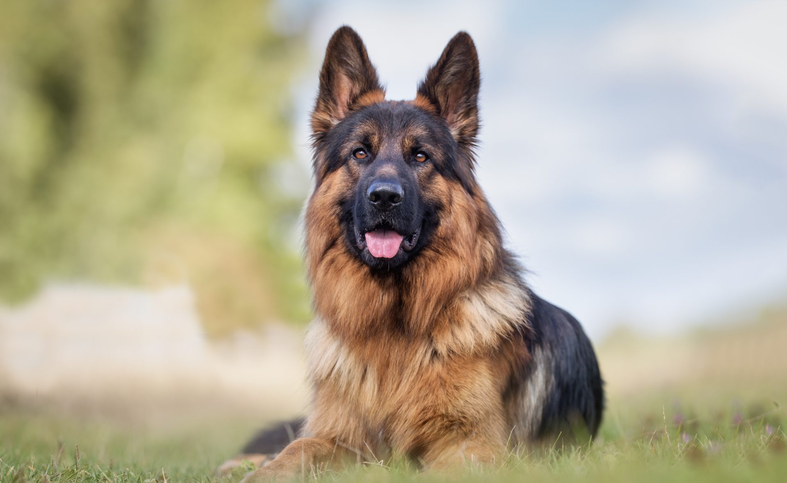
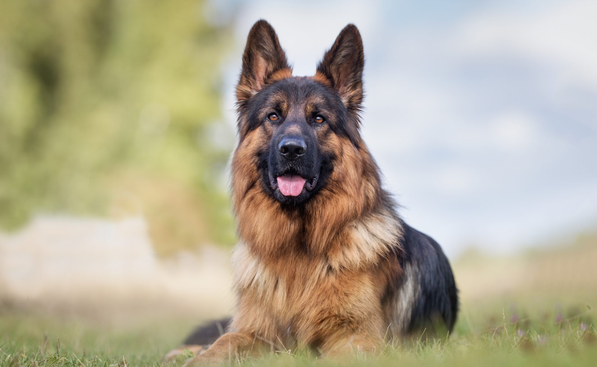

Witam na mojej stronie o pieskach.
Tutaj opiszę moje ulubione pieski i dlaczego je lubię.
Proszę jednak pamietać, że każdy piesek jest wspaniały na swój sposób.
To tylko moja opinia.
Oto mój pierwszy ulubiony piesek

Lubie te pieski ponieważ:

Więcej o tych pieskach można poczytać tu
Lubie te pieski ponieważ:
- Są duże
- Odważne
- Mięciutkie
| Waga pieska | Wielkość pieska |
| 30-40 kg | 60-65 cm |
Owczarek niemiecki pierwotnie był nieco podobny do wilka. Stąd określenie, które przylgnęło do niego już na dobre – wilczur.
Pies tej rasy jest średniej wielkości, a jego sylwetka powinna być harmonijnie zbudowana.
Klatka piersiowa jest głęboka, grzbiet wydłużony, a zad – spadzisty. Głowa ma wielkość proporcjonalną do ciała, a uszy są stojące i spiczaste.
A oto inne zdjęcie tego pieska

Więcej o tych pieskach można poczytać tu